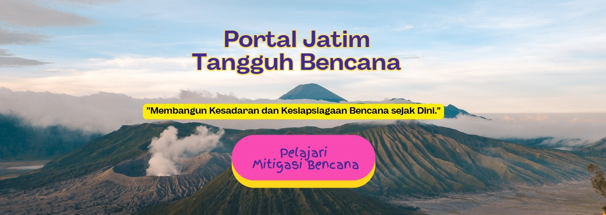

Portal Interaktif Mitigasi Bencana & Edukasi Iklim Fase B & C (Kelas 3–6 SD/MI).
Sebelum memulai petualangan, siapakah nama lengkapmu?
Selesaikan 6 level misi secara berurutan dari Level 1 sampai Level 6. Baca kisah literasinya, tonton videonya, jawab kuisnya, isi refleksi serta aksi nyatanya!
Modul interaktif versi Gamifikasi Berjenjang (Leveling) ini dirancang untuk memicu motivasi belajar siswa Fase B & C melalui pendekatan tantangan, literasi, refleksi, aksi nyata, dan reward (sertifikat). Sangat cocok diimplementasikan pada kegiatan kokurikuler ataupun Proyek Penguatan Profil Pelajar Pancasila (P5) tema Gaya Hidup Berkelanjutan.
Bantu kami menyempurnakan inovasi ini. Silakan isi form evaluasi melalui tautan berikut:
📋 Isi Google Form Masukan & EvaluasiPortal edukasi mitigasi bencana ini dikembangkan khusus untuk Climate Change Learning Kit 2026.
Dirilis di bawah lisensi Creative Commons (CC BY-NC-SA 4.0):
✅ Boleh ditiru dan dimodifikasi oleh sekolah manapun.
❌ Tidak boleh dikomersialkan (diperjualbelikan).
✍️ Wajib mencantumkan nama pengembang asli saat memodifikasinya.
*Aplikasi ini 100% aman dan dirancang mandiri tanpa bantuan AI generatif dalam penyusunan narasi literasi.
Diberikan dengan bangga kepada:
Telah berhasil menuntaskan 6 Level Misi Literasi, Refleksi & Aksi Nyata Bencana
di Portal Jatim Tangguh Bencana (JTB).
Ernaz Siswanto, S.Pd., M.Pd.
Kepala SDN Tulungrejo 03 Kota Batu / Pengembang Portal